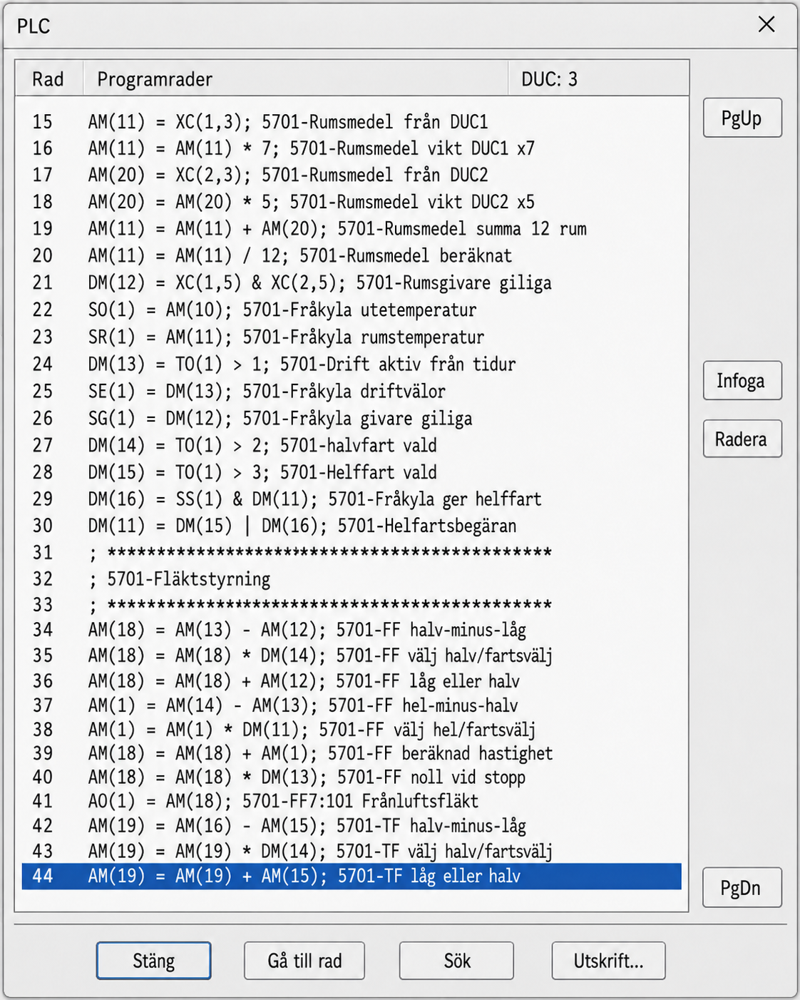
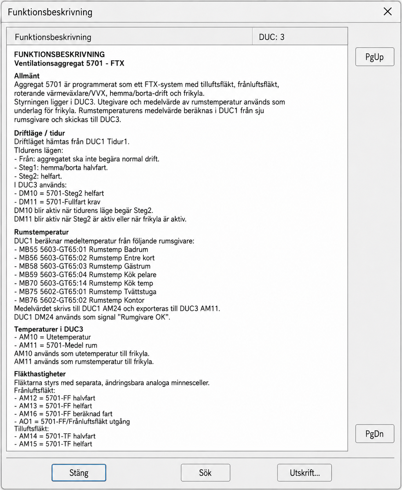
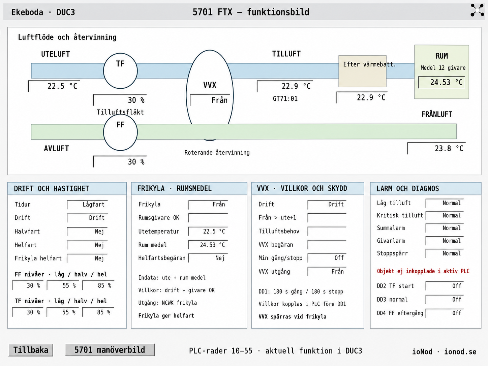
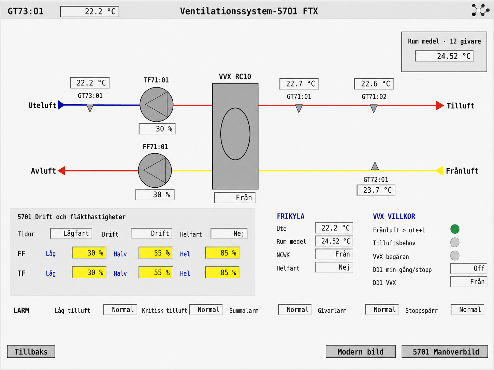

Direkt mot BAS2 och BAS3
Arbetar direkt mot BAS2- och BAS3-DUC:er via TCP, USB eller HTTP — med samma agentiska arbetssätt oavsett anslutning.
Stängd alpha · DS prototyp
BASx arbetar direkt mot BASTEC-system på ingenjörsnivå. Beskriv vad du vill åstadkomma med egna ord, så undersöker BASx anläggningen, resonerar kring uppgiften och genomför arbetet tillsammans med dig.
Pågående uppgift
Byggt för kvalificerat ingenjörsarbete i verkliga system.
Redan tillgängligt
BASx arbetar direkt med DUC:en. Funktionerna nedan är på plats, används i praktiskt ingenjörsarbete och skapar värde även i avancerade uppgifter.
Arbetar direkt mot BAS2- och BAS3-DUC:er via TCP, USB eller HTTP — med samma agentiska arbetssätt oavsett anslutning.
Översätter en funktionsbeskrivning till I/O, objekt och PLC-logik — steg för steg och granskningsbart.
Läser plintlistan, mappar signalerna och konfigurerar automatiskt anläggningens I/O med rätt kanaler, signalnamn, typer och skalning.
Hämtar information ur DUC:en och producerar en funktionsbeskrivning av det som redan finns.
Identifierar rätt objekt och parametrar, förklarar konsekvensen och genomför godkända ändringar med precision.
Analyserar anläggningsvärden och loggar, hittar mönster och presenterar välgrundade orsaker och åtgärder.
Ritar processbilder från grunden eller efter exempel, granskar befintliga bilder och hittar fel och förbättringsmöjligheter.
Tolkar underlag och bygger Modbus-konfigurationer mot aggregat, med noggrann kontroll av register och skalning.
Jämför funktionalitet mellan anläggningar och kopierar aggregat med funktion, objekt och bild som utgångspunkt.
Går igenom loggar, tar fram åtgärder och dokumenterar vad som ska kontrolleras efteråt.
Beskriv problemet på svenska, engelska eller ett annat språk. Det viktiga är att dialogen blir begriplig för dig.
Analysera behovet och lägg upp loggar med hänsyn till tillgängligt utrymme, provtagningsintervall och anläggningens funktion.
Så fungerar arbetet
BASx undersöker, resonerar, programmerar och dokumenterar tillsammans med dig. Du behåller överblicken och avgör vad som ska genomföras.
”Kopiera funktion och bild från detta aggregat.” ”Varför larmar värmeväxlaren?” ”Hjälp mig lägga till en Modbus-mätare.”
BASx hämtar struktur, värden, filer och annan relevant information och bygger en tydlig bild av läget.
Du får begripliga förklaringar, genomarbetade resultat och konkreta nästa steg. Be om en andra analys eller gå djupare i detaljerna.
Resultatet är transparent och granskningsbart. Du kontrollerar det före ändringar och avgör vad som ska genomföras i anläggningen.
Ärlig status
”Denna AI är än mycket ung — förvänta dig inte underverk.”
Kärnfunktionerna är på plats och används redan, samtidigt som gränssnitt och arbetsflöden fortsätter att utvecklas. Åtkomst ges till ett begränsat antal personer som vill arbeta praktiskt och bidra med återkoppling.
BASx förstärker din förmåga att analysera, bygga och dokumentera på hög nivå. Din erfarenhet ger sammanhanget och säkerställer att resultatet passar den verkliga anläggningen.
Alla ändringar, PLC-förslag, registermappningar och bilder måste kontrolleras och testas av behörig, kunnig personal innan de används i en aktiv anläggning.
Praktiska alpha-tester visar både styrkor och gränser. Återkoppling på resultat, arbetsflöden och säkerhet driver utvecklingen framåt.
Verkliga arbetsresultat
Alla bilder nedan visar verkligt arbete som BASx har utfört självständigt — inte mockuper. PLC-programmet och funktionsbeskrivningen är konkreta leveranser från samma anläggningsarbete.




Kom igång
BASx arbetar i en agentisk AI-miljö som kan köra färdigheter (skills) och lokala verktyg. Där får BASx utrymme att planera, utföra hela arbetsflöden och återrapportera resultatet på ditt språk.
BASx behöver en miljö som kan använda lokala verktyg och skills, inte bara föra en vanlig chatt.
Låt den valda AI-miljön guida dig genom förutsättningarna och installationen.
Låt BASx läsa, analysera, dokumentera eller genomföra ett komplett arbetsmoment i anläggningen.
Tips på vägen
Installationen görs en gång. Därefter är BASx redo för återkommande och avancerat anläggningsarbete.
Välj en enkel skrivbordsapp för dialog med BASx eller arbeta projektbaserat i VS Code med full överblick över filer, instruktioner och resultat.
BASx levereras som ett arkiv. Be den valda AI-miljön att installera det. När installationen är klar kan BASx uppdateras till de senaste versionerna allteftersom de släpps genom att du bara ber om det.
Vissa operativsystem kräver manuella rättighetsåtgärder innan verktyget får full funktionalitet. BASx ger dig instruktioner steg för steg. Stöter du på problem är det bara att be om hjälp.
Be BASx att installera Python. Då kan BASx skriva och köra egna skript för beräkningar, databehandling och repetitiva eller mekaniska arbetsmoment — och producera PDF-rapporter med loggdiagram samt färdigformaterad dokumentation.
Det kan ta en stund att få alla delar på plats första gången. Det är en engångsprocess — när den är klar finns verktygen redo för kommande arbeten.
Var inte rädd för långa, komplexa och detaljerade förfrågningar. BASx har redan tillgång till ett omfattande dokumentationsarkiv i minnet, och din långa fråga är faktiskt inte särskilt lång alls i jämförelse.
BASx arbetar medvetet försiktigt, men stödjer olika arbetssätt. Om BASx är för försiktigt, be BASx arbeta aggressivare — mindre förarbete, mindre kontroller och större självförtroende!
Stängd alpha
Kontakta DS prototyp för att diskutera förutsättningar, testupplägg och tillgång. Mjukvaran är strikt licensbelagd.